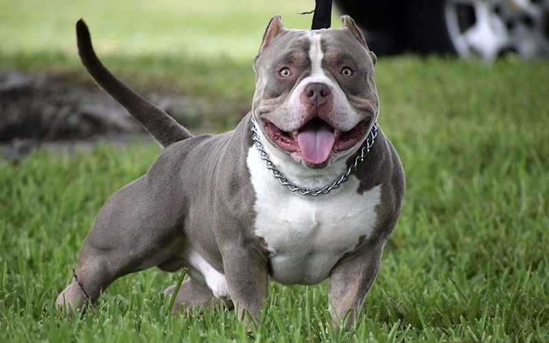

Đặc điểm chó Golden
Ngoại hình chó Bully
Nhìn tổng thể, chó Bully có ngoại hình đồ sộ với cơ bắp săn chắc, háng chân rộng và bề thế giống như dáng các võ sĩ Sumo đứng tấn. Tuy nhiên, chiều cao của chúng khá khiêm tốn, chỉ từ 18 – 21 inch tính tới vai đối với chó đực và chó cái là 17 – 20 inch. Một số đặc điểm ngoại hình nổi bật của giống chó Bully:
Đầu lớn, có nhiều nếp nhăn, tai hình tam giác nhọn vểnh lên (có thể được cắt hoặc không). Mắt của chúng màu nâu đen hoặc đen, hai mắt nằm xa nhau, khóe mắt màu hồng nhẹ. Hàm chó Bully cực khỏe, miệng rộng hơi hồng, má xệ và thòng xuống.
Cổ Bully ngắn nhưng to, phần da cổ hơi võng xuống, thon từ vai đến lưng sọ sau. Vai Bully nhiều cơ bắp nên trông rất mạnh mẽ.
Khung sườn chó Bully chắc chắn, lưng ngắn vừa phải và từ bả vai tới mông hơi nghiêng xuống, có độ dốc nhẹ ở phần mông. Thân chúng to, phần ngực bè ngang, ức sâu và rộng, bụng hóp lại.
Đuôi chó Bully thường ngắn, buông thõng, không quăn. Hai chân trước của chúng to khỏe và thẳng, hơi hướng khuỳnh vào trong. Còn hai chân sau phát triển mạnh phần bắp đùi, cơ bắp nổi lên cuồn cuộn, ngón chân nhỏ, móng nhọn.
Lông chó Bully đa màu và loang lổ, thường kết hợp từ 2 màu. Sợi lông mượt, ngắn và ôm sát vào da, sờ vào thấy cứng. Da Bully dày, không chảy xệ.
Chó Bully cái sẽ sinh từ 4 – 8 lứa trong vòng đời của mình và tuổi thọ của giống chó này nằm trong khoảng từ 8 – 12 năm.
Tính cách chó Bully
Chó Bully nhìn bề ngoài có vẻ hung hăng với khuôn mặt hung dữ, hiếu chiến nhưng thật ra tính cách chúng lại trái ngược hoàn toàn:
Điềm tĩnh và thân thiện, rất nghe lời chủ nhân, không chủ động tấn công, luôn sẵn sàng chơi đùa. Tuy nhiên, nếu bị khiêu khích và chọc tức chúng sẽ chiến đấu tới cùng.
Trung thành, rất quấn chủ, thông minh và nhanh nhạy. Bully có thể hi sinh tính mạng để bảo vệ chủ nhân.